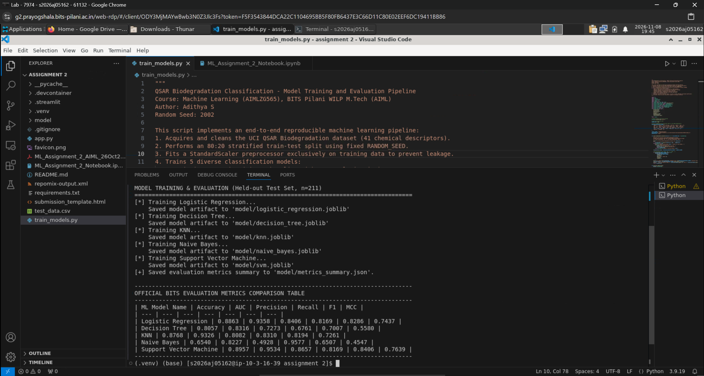
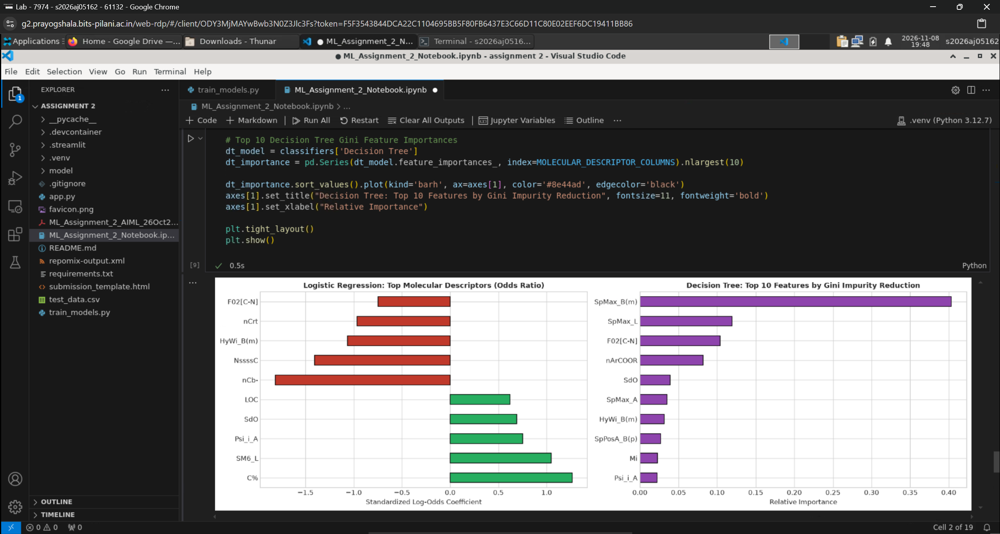
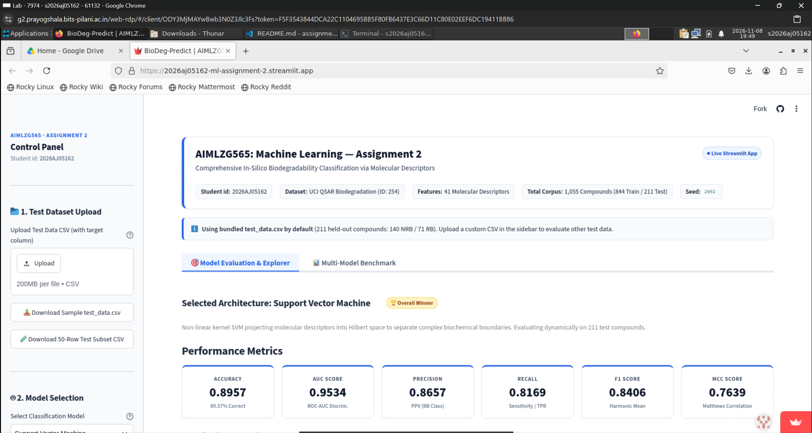

requirements.txt, comprehensive README.md,
test_data.csv, Jupyter notebook ML_Assignment_2_Notebook.ipynb, and serialized
pre-trained models in model/.
The entire assignment modeling pipeline was executed within the BITS Virtual Lab environment
(g2.prayogshala.bits-pilani.ac.in) under student account s2026aj05162 (terminal:
[s2026aj05162@ip-10-3-16-39 assignment 2]$).
train_models.py in VS Code terminal on BITS Virtual Lab (user:
s2026aj05162). Demonstrates training all 5 classifiers, artifact serialization into
model/, and printing the official 5-model evaluation metrics table.

ML_Assignment_2_Notebook.ipynb in BITS Virtual Lab environment (Python 3.12.7 kernel).
Visualizes Top Molecular Descriptors by Standardized Log-Odds (Logistic Regression) and Top 10 Features by
Gini Impurity Reduction (Decision Tree).

https://2026aj05162-ml-assignment-2.streamlit.app) verified
inside Google Chrome on BITS Virtual Lab. Displays student ID 2026AJ05162, high-contrast light theme,
bundled test_data.csv status, and live Support Vector Machine metrics.

Evaluating whether organic chemicals readily biodegrade in aerobic aquatic environments is an indispensable safety requirement under international regulations (e.g., EU REACH regulation and OECD 301 testing guidelines). Laboratory degradation assays require prolonged 28-day microbial incubation tests that are expensive, labor-intensive, and impractical for screening large chemical spaces.
Quantitative Structure-Activity Relationship (QSAR) modelling provides a rapid in-silico alternative by predicting experimental biodegradability directly from computed molecular descriptors. In this project, we implement and benchmark five distinct machine learning classification architectures to predict whether a compound is Ready Biodegradable (RB, 1) or Not Ready Biodegradable (NRB, 0) based on 41 molecular descriptors.
The study employs the benchmark UCI QSAR Biodegradation Dataset (ID: 254), compiled by the Milano Chemometrics and QSAR Research Group.
RANDOM_SEED = 2002. The held-out test set is saved as test_data.csv.
StandardScaler was fitted exclusively on the 80% training set
and saved as model/preprocessor.joblib. Test samples are transformed without data leakage.Repository Link: https://github.com/AdiS-2105/ml-assignment-2
Performance of all five models evaluated on the held-out test set (n = 211; 140 NRB, 71 RB):
| ML Model Name | Accuracy | AUC | Precision | Recall | F1 | MCC |
|---|---|---|---|---|---|---|
| Logistic Regression | 0.8863 | 0.9358 | 0.8406 | 0.8169 | 0.8286 | 0.7437 |
| Decision Tree | 0.8057 | 0.8316 | 0.7273 | 0.6761 | 0.7007 | 0.5580 |
| KNN | 0.8768 | 0.9326 | 0.8082 | 0.8310 | 0.8194 | 0.7261 |
| Naive Bayes | 0.6540 | 0.8227 | 0.4928 | 0.9577 | 0.6507 | 0.4547 |
| Support Vector Machine 🏆 | 0.8957 | 0.9534 | 0.8657 | 0.8169 | 0.8406 | 0.7639 |
| ML Model Name | Observation about model performance |
|---|---|
| Logistic Regression | Strong Linear Baseline: Achieves 88.63% Accuracy and 0.9358 AUC. The L2 penalty effectively
regularizes collinear descriptors. Higher oxygen counts (nO) and ester bonds
(nArCOOR) strongly increase the log-odds of biodegradation, matching biochemical
oxidation mechanisms. |
| Decision Tree | Axis-Aligned Stepped Partitions: Yields 80.57% Accuracy and 0.5580 MCC with pre-pruning
(max_depth=5). Orthogonal decision hyperplanes struggle to approximate smooth diagonal
interactions across continuous molecular manifolds. |
| KNN | Congeneric Neighborhood Clustering: Achieves 87.68% Accuracy and 0.9326 AUC. Effectively leverages the chemical similarity principle in 41D standardized metric space. |
| Naive Bayes | High Sensitivity / Independence Violation: Achieves the highest Recall across all models (95.77%), correctly detecting 68 out of 71 biodegradable compounds. However, strong descriptor inter-correlations violate conditional independence, causing 70 false positives. Serves as an effective conservative screening filter. |
| Support Vector Machine | Optimal Non-Linear Boundary: Top performer in Accuracy (89.57%), AUC (0.9534), Precision (86.57%), F1 (0.8406), and MCC (0.7639). The RBF kernel maps 41D space into an infinite-dimensional Hilbert space where complex bioactivity surfaces become linearly separable with maximum margin. |
| Overall, Winner for your dataset? | Support Vector Machine (RBF Kernel) 🏆: The definitive winner. On moderate sample sizes (n = 844) with high feature dimensionality (d = 41), kernel SVM optimizes structural risk minimization, generating the fewest false positives (only 9/140) and highest correlation (MCC = 0.7639). |
test_data.csv and download triggers.model/ without data leakage.
I declare that this assignment submission is my own original work. The models, evaluation metrics, pipeline scripts,
and interactive Streamlit application were built and validated in compliance with the BITS Pilani WILP academic
integrity guidelines. All experiments use reproducible fixed random seed 2002.